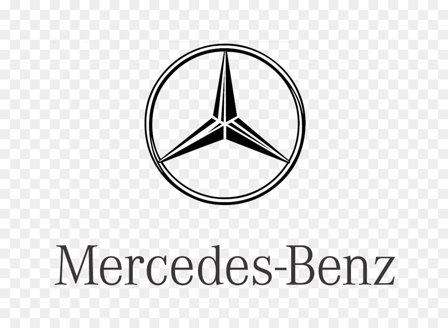
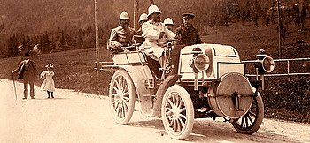
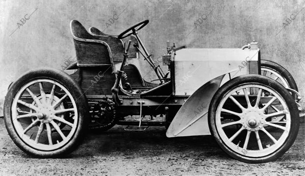
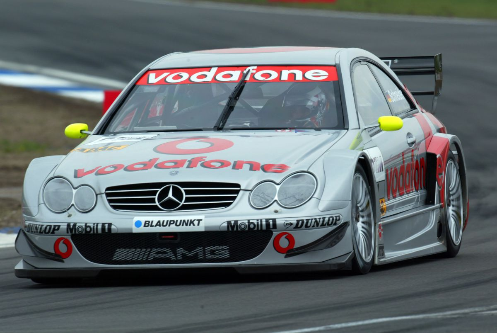
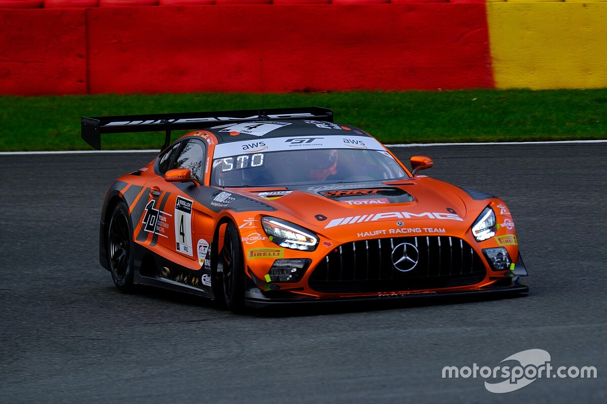

LA HISTORIA DE MERCEDES Y SU EVOLUCIÓN
ESTE ES SU COMIENZO...
La historia de Mercedes Benz comenzó a finales del siglo XIX y está íntimamente ligada al origen mismo del automóvil. Además, está asociada a dos grandes nombres: Karl Benz y Gottlieb Daimler, visionarios que vieron el potencial de un nuevo medio de transporte y comenzaron a trabajar para hacerlo realidad.
Tanto Benz como Daimler fundaron sus propias empresas y trabajaron en sus desarrollos e ideas. Cuenta la leyenda que Karl Benz fue el inventor del primer automóvil en 1883 (el Benz Patent-Motorwagen); un prototipo de tres ruedas que podía alcanzar una velocidad máxima de 17 kilómetros por hora: una verdadera hazaña para la época.
Diez años después, Benz también fabricó el primer vehículo de cuatro ejes: el Benz Victoria. Se estaban poniendo los cimientos de un invento que cambiaría la historia del mundo y de una marca que, hasta el día de hoy, es sinónimo de lujo e innovación.
AVANCES...
El gran avance llegó en 1900 con el radiador de panal del Mercedes 35 CV. Constaba de más de 8.000 tubos pequeños con una sección transversal cuadrada de unos seis milímetros por lado. La mayor superficie frontal y el mayor flujo de aire que ofrecían los tubos cuadrados proporcionaban una potencia de refrigeración significativamente mayor. Se soldaron para crear un nuevo tipo de radiador rectangular con depósito integrado. Un ventilador situado detrás del radiador mejoraba la regulación de la temperatura a bajas velocidades en carretera. El motor de 35 CV del primer Mercedes sólo necesitaba nueve litros de agua en lugar de los 18 litros anteriores. Un año más tarde y una serie de mejoras, el consumo se redujo a sólo siete litros.
 
MERCEDES EN LA ACTUALIDAD...
Hoy en día, Mercedes, es una marca que simboliza el lujo, la innovación, el confort, la deportividad...
Mercedes, a demás de ser una marca de "LUJO" es una marca que participa en muchísimos eventos deportivos como la F1, los DTM y otros muchos eventos importantes.
El Deutsche Tourenwagen Masters, también conocido como DTM, es un campeonato de automovilismo de velocidad que se disputa en Alemania desde el año 2000.


ACERCA DE SUS GANANCIAS
En 2021, la empresa automovilística alemana ingresó aproximadamente 168.000 millones de euros, lo que supuso un crecimiento de más de 13.600 millones con respecto a la cifra registrada durante el año anterior.
MEJORES COCHES DE MERCEDES
Estos son algunos de los mejores coches Mercedes jamás creados, y que desafían la tecnología, el lujo, velocidad y la potencia.
Mercedes Clase G. ...
Mercedes CLS W219. ...
Mercedes 500E. ...
Mercedes SL R129. ...
Mercedes McLaren SLR. ...
Mercedes CLK AMG GTR. ...
Mercedes C63 AMG W204. ...
Mercedes 300SL.
PARA MÁS INFORMACIÓN...
PARA ACCEDER A LA PÁGINA OFICIAL DE MERCEDES PINCHE AQUÍ
PARA VER UN VIDEO SOBRE LAS CARRERAS DTM PINCHE AQUÍ
PARA VER UN VIDEO DE COMO UN PILOTO DE F1 LLEGA A LO MAS ALTO PULSE AQUÍ (LEWIS HAMILTONACTUAL PILOTO DE MERCEDES)
PARA UNA MAYOR INFORMACIÓN SOBRE LA HISTORIA DE MERCEDES PULSE AQUÍ